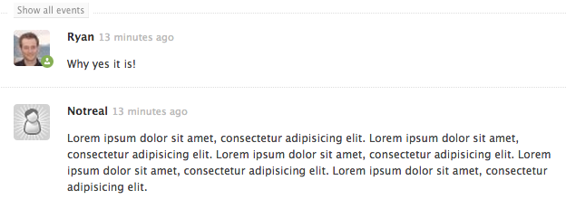

The Composable Web
with Web Components
@ryanseddon
Templates
<template>
<h1>User</h1>
<img src="avatar.jpg" />
<script>console.log("user");</script>
</template>
Templates
- Inert DOM
- Parsed but not rendered
- Queryable
- Won't load assets until inserted
Custom Elements
<x-reverse></x-reverse>
Custom Elements
- Define new elements
- Lifecycle events
- Extend existing elements
- Abstract away complexity
- Must have a hyphen
Register Custom Element
var XReverse = document.registerElement('x-reverse');
Prototype Custom Element
var XReverse = document.registerElement('x-reverse', {
prototype: Object.create(HTMLElement.prototype);
});
Lifecycle events
- createdCallback()
- attachedCallback()
- detachedCallback()
- attributeChangedCallback()
Custom Element FOUC?
x-reverse:unresolved {
opacity: 0;
}
x-reverse {
transition: opacity 0.5s;
opacity: 1;
}
Shadow DOM
Shadow DOM
- Encapsulation
- Hidden subtree
- Encapsulated styles
- events are retargeted
- iFrame without the baggage*
Shadow DOM elements
- <content></content>
- <conent select="section:nth-child(1)"></content>
- <shadow></shadow>
Shadow DOM CSS
- :host & :host(<selector>) {} - Host element styles
- :host(:hover) {} allows you to react to user state
- :host-context(<selector>) {} - Ancestor theming
- ::shadow & /deep/ {} - Shadow DOM styles
- ::content {} - Distributed content
Imports
<link rel="import" href="media-object.html">
Imports
- Easy mechanism to bring in a component for use
- Component can import more components
- Asynchronous request*
- Easily distributed through bower or npm
Composability
A component should do one thing well
Unix philosophy
Emphasize building short, simple, clear, modular, and extendable code that can be easily maintained and repurposed by developers other than its creators.
— Wikipedia
Example

<media-object></media-object>
<media-object>
<x-avatar></x-avatar>
</media-object>
<media-object>
<img is="x-avatar" />
</media-object><media-object>
<img is="x-avatar" />
<mo-body></mo-body>
</media-object>
<media-object>
<img is="x-avatar" />
<mo-body>
<mo-header></mo-header>
</mo-body>
</media-object>
<media-object>
<img is="x-avatar" />
<mo-body>
<mo-header></mo-header>
<mo-content></mo-content>
</mo-body>
</media-object>
x-avatar
document.registerElement('x-avatar', {
prototype: Object.create(HTMLImageElement.prototype),
extends: 'img'
});
var XAvatarPrototype = Object.create(HTMLImageElement.prototype);
XAvatarPrototype.createdCallback = function() {
var data = this.dataset,
username = data.username,
service = data.service,
url = 'http://avatars.io/' + service + '/' + username;
this.src = url;
};
<img
is="x-avatar"
data-service="twitter"
data-username="ryanseddon"
/>
XAvatarElementPrototype.getAvatarURL = function() {
// Return avatars.io formatted url
};
XAvatarElementPrototype.attributeChangedCallback = function(attr) {
this.src = this.getAvatarURL();
};
media-object
- Imports x-avatar
- Needs some baseline styles
<link rel="import" href="x-avatar.html">
Register media-object, mo-body, mo-header, mo-content
document.registerElement('...');
Encapsulate styles
MediaObjectElementPrototype.createdCallback = function() {
this.createShadowRoot().innerHTML = styles + '<content></content>';
}
That "styles" var
:host {
display: flex;
}
::content [is="x-avatar"] {
margin-right: 15px;
}
::content mo-body {
flex: 1;
}
No classes
- Baseline styles like browser user stylesheets
- Stick to element and attribute selectors
:host and ::content
- :host allows you to target the shadow DOM host element
- ::content allows you to target distributed content
Web Components API
Starts to get a little verbose but that's on purpose

- Platform.js polyfills
- Layer on top
- Declarative syntax
- data-binding
- Dynamic templates
- Much, much more
Polymer media-object
<polymer-element name="media-object" noscript>
<template>
<!--// Shadow DOM -- >
<link rel="stylesheet" href="media-object.css">
</template>
</polymer-element>
<media-object> demo
Mozilla Brick
reusable UI components created to enable rapid development of cross-browser and mobile-friendly HTML5 web applications.
Composability in mind
- Built on underlying X-Tag library
- X-Tag and Polymer use the same polyfills
Frameworks
- Angular Directives
- Ember Components
- React.js
Web Component issues
Conflicts and relationships
- Global pollution
- Namespacing to avoid conflicts
- Can't create element relationships think <option> in <select>
XML Namspacing
<namespace:media-object></namespace:media-object>Dependency management
- How can I get components that use the same library to share?
- What about component A using jQuery 1.x and component B using 2.x
- Could solve through agreement of CDN usage?
Accessibility, Performance & Security
- As a consumer how will I know these are considered?
- As a developer how can I make sure these are big factors?
...where pioneers and community-members of the Web Components ecosystem document web components best practices...
The goto place for
Web Components
Takeaways
- Web Components lend themselves to composability
- Polymer & X-Tag allows you to build today
- Spec is rapidly changing be careful what you build
- Chrome & Firefox are rapidly adding native support
- Your favourite framework will probably be a layer on top